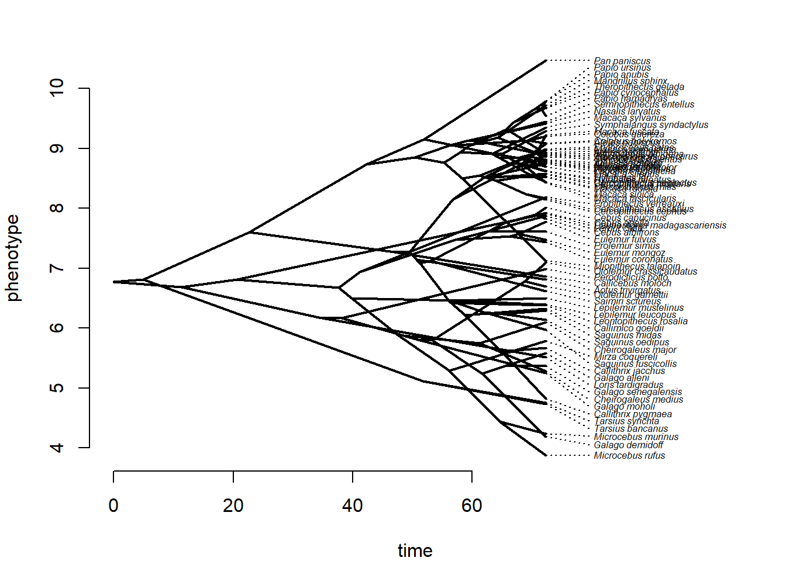
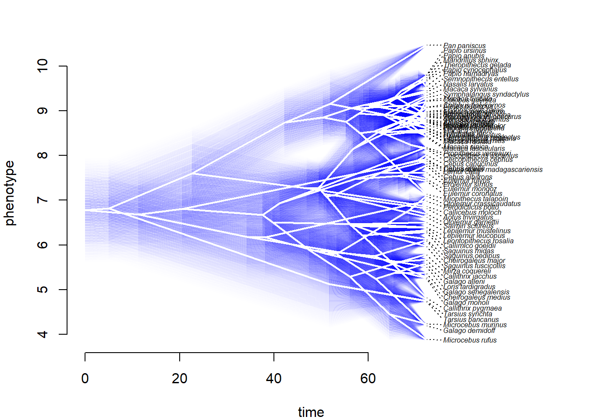
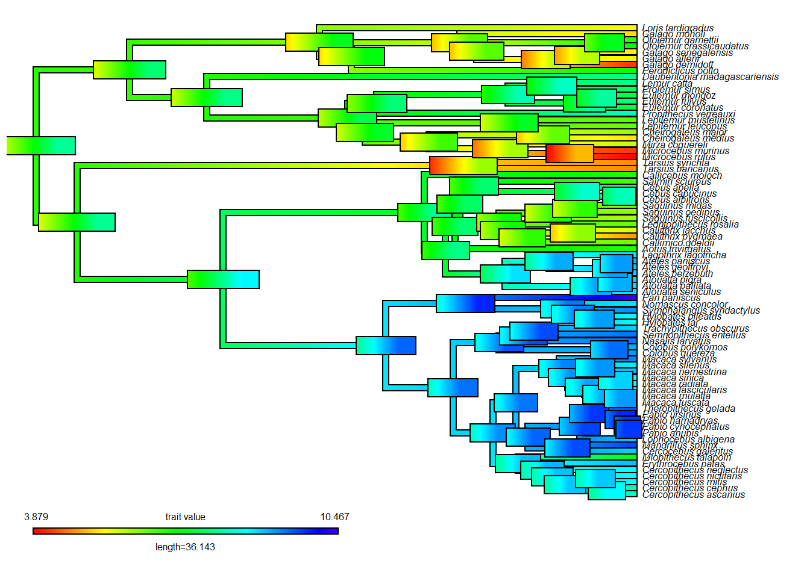
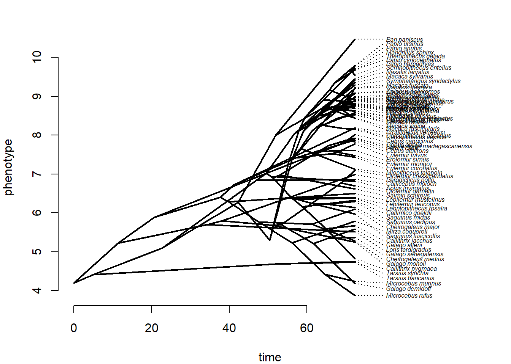

Existem vários modelos de evolução de atributos contínuos univariados. Os modelos macroevolutivos mais comuns são o Browniano (BM), o modelo de Ornstein-Uhlenbeck (OU) e o modelo Early-Burst (EB). Sobre ajuste de modelos evolutivos, leia Butler and King (2004).
No exemplo, a função fitContinuous do pacote geiger vai ser usada para ajustar os modelos. O método é baseado em verossimilhança (likelihood), e os resultados vão retornar o valor de máxima verossimilhança (maximum likelihood) como estimativa para os parâmetros. Diferentes modelos podem ser comparados, desde que sobre os mesmos dados. Vamos carregar vários atributos fenotípicos para 77 espécies de Primatas.
O modelo Browniano estima a taxa de evolução σ2 (sigsq no output), e o valor do atributo na raiz X(0) (z0 no output). Outras estimativas do output são o likelihood (lnL) do modelo, o AIC/AICc e o número de parâmetros (k na literatura) do modelo.
No modelo EB o parâmetro a é a taxa de mudança através do tempo. O valor de a é normalmente menor ou igual a 0. Quando a é negativo, as taxas de evolução decrescem com o tempo. Se a é próximo de 0, a evolução é aproximadamente Browniana.
Nós podemos comparar o ajuste dos modelos usando um critério de informação, como o AIC. Existe debate sobre quão grande deve ser a diferença no AIC para definir um único “melhor” modelo, variando de 2-10 unidades. É comum usar 4 unidades, então EB não tem um ajuste muito melhor do que BM ou OU nos dados do exemplo.
BM$opt$aiccOU$opt$aiccEB$opt$aiccaic.scores<-setNames(c(BM$opt$aicc,OU$opt$aicc,EB$opt$aicc),c("BM","OU","EB"))aic.scoresaicw(aic.scores) # Delta AICc e AICc weights
21.2 Reconstrução ancestral de dados contínuos
Vamos estimar o tamanho corporal ancestral para primatas, sob um modelo Browniano de evolução. As funções ace (ape) e fastAnc (phytools), entre outras, implementam reconstrução ancestral via maximum likelihood (encontrando os estados com verossimilhança máxima de terem surgido sob o modelo escolhido).
# Modo fenograma 'traitgram'par(mfrow =c(1, 1),mar=c(4, 4, 2, 2))phe<-phenogram(tree,log(bodymass),ftype="i",fsize=0.5)

# Incerteza (CI 95%) nas estimativas dos nósfancyTree(tree,type="phenogram95",x=log(bodymass),ftype="i",fsize=0.5) # pode demorar

# Adicionando barra de erros com coresrec.map<-contMap(tree,log(bodymass),fsize=0.5,ftype="i")errorbar.contMap(rec.map)

Uma crítica comum a reconstrução ancestral é que a incerteza ao redor do nós pode ser grande. No entanto, se o modelo evolutivo está correto, as estimativas são confiáveis (95% de chance de o valor estimado incluir o valor ‘real’). Em teoria, é possível corrigir a estimativa se o valor de algum nó é conhecido (e.g., fóssil), como no exemplo abaixo.
# Reconstrução com valores de nós conhecidosrec$ace # estados ancestrais estimadosanc.states<-rec$ace[as.character(c(78,80,82))]anc.states # valores estimados para nós 78 (raiz), 80 e 82anc.a<-c(4.2,5.1,5.3) # valores conhecidosnames(anc.a)=names(anc.states)anc.arec.1<-fastAnc(tree,x=log(bodymass),anc.states=anc.a,vars=TRUE,CI=TRUE)print(rec.1,printlen=10)# Comparando com a reconstrução originalprint(rec,printlen=10)# Visualizando reconstrução com nós conhecidos# lista contendo valores terminais + estimados com fastAncX<-c(log(bodymass),rec.1$ace)par(mfrow =c(1, 1),mar=c(4, 4, 2, 2))phenogram(tree,X,ftype="i",fsize=0.5)

21.3 Exercício - Modelos contínuos e variação intraespecífica
Carregue os dados: primate-data-erro.txt primate-tree.txt Estime o sinal filogenético com a estatística K, e ajuste e compare os modelos BM, OU e EB para os dados considerando a variação intraespecífica. O arquivo de dados contém log de massa corporal para dez indivíduos de cada espécie de primata. Faça uma média de tamanho corporal por espécie e calcule o erro padrão da média. Descubra (leia a documentação das funções ?phylosig e ?fitContinuous) como incorporar o erro padrão no cálculo de sinal filogenético e ajuste de modelos. Você pode usar a função apply para calcular a média e o desvio padrão da média (SD). O erro padrão da média (uma medida de quão precisa é a estimativa da média) pode ser obtido através da fórmula SD/√N (N=tamanho da amostra) = se<-sd/sqrt(10).
Butler, Marguerite A., and Aaron A. King. 2004. “Phylogenetic Comparative Analysis: A Modeling Approach for Adaptive Evolution.”The American Naturalist 164 (6): 683–95. https://doi.org/10.1086/426002.
Hansen, Thomas F., and Emília P. Martins. 1996. “Translating Between Microevolutionary Process and Macroevolutionary Patterns: The Correlation Structure of Interspecific Data.”Evolution 50 (4): 1404–17. https://doi.org/10.1111/j.1558-5646.1996.tb03914.x.